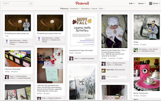
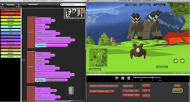
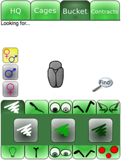
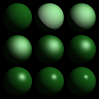
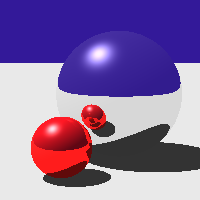
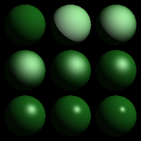
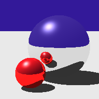

Nicole Stein
Hello! I'm Nicole. I teach people how to program and I program to teach people.
Education
Massachusetts Institute of Technology (Cambridge, MA)
Masters of Engineering degree in Computer Science, February 2011. GPA: 4.9/5.0
Bachelor of Science degrees in Computer Science & Engineering and Mathematics, February 2010. GPA: 4.6/5.0
Software Experience
Amplify Education, Developer (New York, NY: February 2011-present)
Jan 2013-present: Implemented educational mobile applications using Unity3D, AngularJS, HTML5, JavaScript, PhoneGap, and the Android Java SDK.
Feb 2011-Jan 2013: Implemented several aspects of Burst:Reading, a literacy intervention program for grades K-6, using Java, Python, and SQL. Served as the team point-person for our front-end web framework for displaying student data, which was built on top of the Java Spring framework.
(Note: Amplify Education, Inc. was known as Wireless Generation, Inc. until late 2012)
Scheller Teacher Education Program, MEng student (Cambridge, MA: February 2010-February 2011)
Worked on implementing new features and debugging several aspects of StarLogo TNG, a graphical programming environment.
Google, Software Engineering Intern (Mountain View, CA: June 2009-August 2009)
Implemented a testing framework for character segmentation in Tesseract, the open-source OCR engine.
Microsoft, Software Design Engineer in Test (SDET) Intern (Redmond, WA: May 2008-August 2008)
Designed and implemented an internal tool for the Office Customer and Partner Engineering Services (CAPES) team to be used when testing Windows SharePoint Server, and also tested hotfixes (patches) for corporate customers.
CSAIL User Interface Design Group, Undergraduate Researcher (UROP) (Cambridge, MA: September 2007-January 2008)
Used Chickenfoot (a Firefox extension which puts a Javascript-like programming environment in your browser) to integrate Google Spreadsheets with Mass Edit (http://groups.csail.mit.edu/uid/mass-edit/), a site which provides multi-line editing capabilities.
Psychoanalytic Electronic Publications, Inc., Quality Assurance (Niskayuna, NY: July 2004-August 2006)
Debugged XML code to be used in a database of psychoanalytic articles.
Teaching Experience
Skills
Programming: C#, Unity3D, Java, Python
Web design: HTML5, CSS3, JavaScript, AngularJS, jQuery
I maintain a calendar of interesting tech/edu-tech events around NYC. I started it mostly for myself, but I figured I might as well share!
McKayla Is Not Impressed Chrome Extension
A Chrome extension that randomly inserts McKayla Maroney, of US Olympic and "McKayla Is Not Impressed" meme fame, into ~20% of images as you browse the web.
Available for free download from the Chrome Web Store
This project won Best Use of a Meme and second place overall at the 2012 NYC Comedy Hack Day. It was subsequently featured on Mashable.
MusicMapp

Collaborators: Johny Urgiles
MusicMapp is a Spotify app that generates playlists of popular music around the world. Users can click on a country to generate a playlist from popularity data gathered from the Last.fm and Spotify APIs. The map was built on top of Leaflet.
SimLogo: Improving Simulations in StarLogo TNG (Masters Thesis)
I worked on StarLogo TNG, a graphical programming environment for students and teachers. Programmers use StarLogo Blocks, which are essentially on-screen puzzle pieces with commands on them, to control 3-D agent-based simulations. This software was designed for both teaching basic programming skills and for conveying other fundamental science concepts through simulations (for example, StarLogo TNG has been used to teach about ecology and predator/prey relationships). However, after the first version of StarLogo TNG was released, we discovered that academic researchers were using our software to build real simulations for their research, due to the simplicity of the programming language and the ease in visualization. The goal of my thesis was to improve the ability of StarLogo TNG to handle complex agent-based simulations.
Beetle Breeders (6.831 Term Project)
Collaborators: Paul Medlock-Walton and Yuzhi Zheng For our 6.831 (User Interface Design) term project, my collaborators and I worked in conjunction with the Scheller Teacher Education Program group on a mobile educational game called Beetle Breeders designed to teach high school and college students in introductory biology classes about Mendelian genetics. The game worked by having students select beetles from a starting "bucket" to breed for different traits (ie. color, number of spots, antenna length), and our task was to prototype an interface for searching for beetles with specific traits in the bucket.
Over the course of the semester, we worked through the design process by analyzing the problem, constructing paper and computer prototypes, and performing user tests, resulting in a final prototype of the beetle bucket search page.
Note: At the implementation stage, I was personally responsible for icon design. The center beetle art was drawn by Yuzhi Zheng and the HTML/CSS/Javascript coding was done by Paul Medlock-Walton. The three of us collaborated on the layout design, discussion, and testing throughout the rest of the project.
Character Segmentation Test Suite for Tesseract OCR Engine (Google Internship Project)
In optical character recognition (OCR), character segmentation is the process of taking a connected component of text, or “blob” and dividing it into individual characters. During my summer at Google, I wrote a test framework to be used on the character segmenter in Tesseract, Google's open-source OCR engine, in order to measure it's accuracy and help to determine which types of characters Tesseract had the most trouble with, in order to devise strategies for improvement. My test framework operated by running Tesseract on computer-generated "fake books" and then comparing the bounding boxes for characters that Tesseract created with those from the ground truth data.
Ray Tracer (6.837 Final Project)
 



For our final 6.837 (Computer Graphics) project, we were tasked with creating a ray tracer that could generate a 3-D image from a programmatic description in a text file. The ray tracer included Phong shading, anti-aliasing, recursive rays, and procedural solid texturing.
Microsoft SharePoint Test Suite (Microsoft Internship Project)
As part of my internship at Microsoft, I designed and implemented an internal test program that could be used by software testers to generate large Sharepoint sites with varying properties which could then be submitted to manual or automated testing. The program was written in C#. Alas, as this program belongs to Microsoft, I have no screenshots, but if you picture an old-school Windows form with lots of boxes and dropdowns, you'll basically get the idea.
MassEdit Integration with Google Spreadsheets (User Interface Design Group UROP)
MassEdit is an online tool for multi-line editing designed by David Huynh. As an undergraduate researcher in MIT's User Interface Design Group, I used Chickenfoot to create a script that would run in-browser and allow users to apply MassEdit's multi-line editing capabilities to Google Spreadsheets. The program would create a tab labled 'Mass Edit' in Google Spreadsheets, which, when clicked, would export selected cells to MassEdit. The user could then use MassEdit and click another button to import the modified cells back to their original positions on the spreadsheet. The program was written in Chickenfoot script, a superset of Javascript.